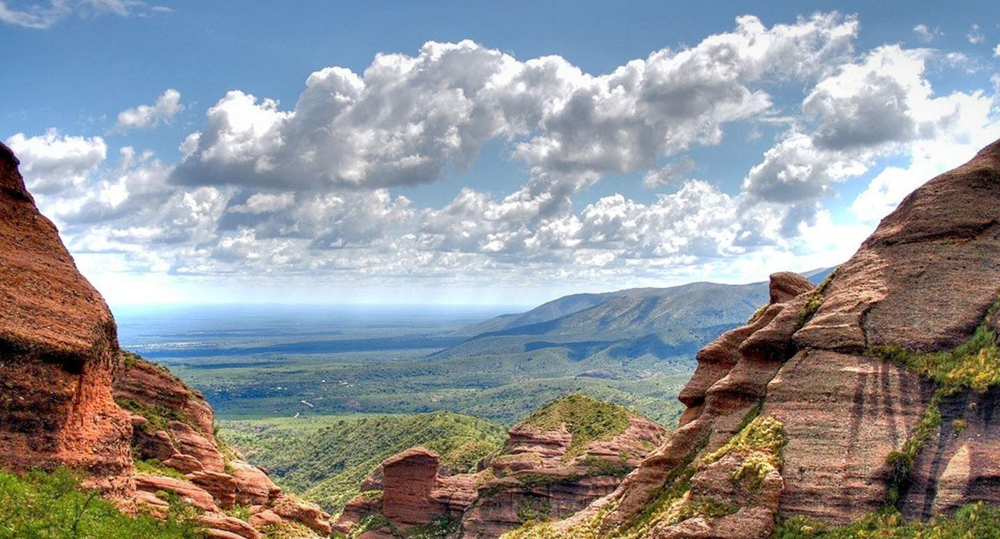
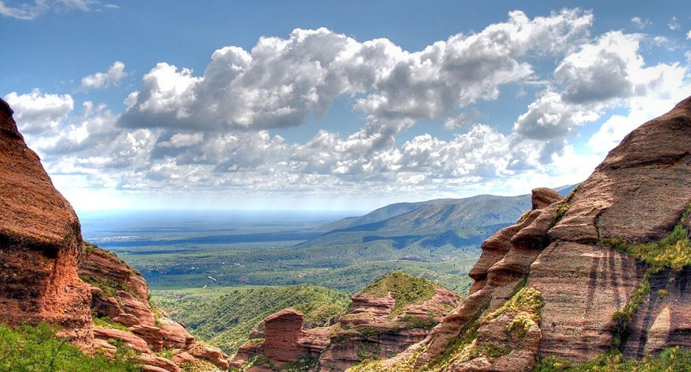

Bariloche
Bariloche, en la Patagonia argentina, es un paraíso de belleza natural y encanto alpino. Destacados: Naturaleza Exuberante: Montañas, lagos cristalinos y bosques de ensueño. Deportes de Invierno: Esquí, snowboard y trineo en el Cerro Catedral. Sabores Locales: Chocolate artesanal, cordero patagónico y truchas frescas. Atracciones: Recorrido Escénico: Circuito Chico para vistas panorámicas. Glaciares y Cascadas: Excursión al Cerro Tronador. Colonia Suiza: Encanto alpino y gastronomía suiza en la Patagonia. Experiencias Culturales: Fiesta Nacional de la Nieve: Celebración invernal con deportes y eventos. Arte Mapuche: Artesanías y tradiciones de la cultura indígena.